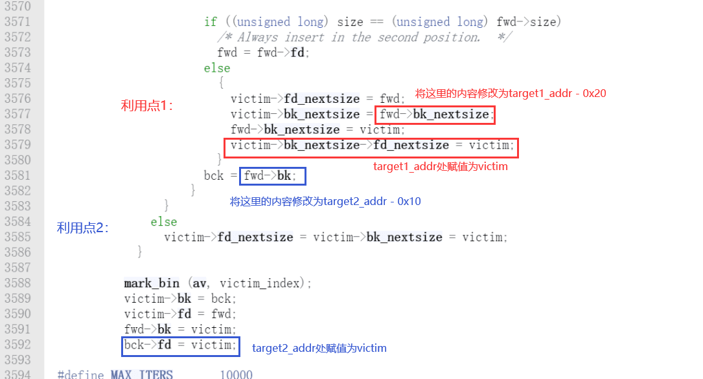

large bin attack
建议先看一下 unsorted bin attack（个人笔记），然后也要了解 large bin，他除了 fd 和 bk 指针，还有一个叫 fd_nextsize 和 bk_nextsize 指针。
理解 fd_nextsize 和 bk_nextsize
/*
This struct declaration is misleading (but accurate and necessary).
It declares a "view" into memory allowing access to necessary
fields at known offsets from a given base. See explanation below.
*/
struct malloc_chunk {
INTERNAL_SIZE_T prev_size; /* Size of previous chunk (if free). */
INTERNAL_SIZE_T size; /* Size in bytes, including overhead. */
struct malloc_chunk* fd; /* double links -- used only if free. */
struct malloc_chunk* bk;
/* Only used for large blocks: pointer to next larger size. */
struct malloc_chunk* fd_nextsize; /* double links -- used only if free. */
struct malloc_chunk* bk_nextsize;
};
要理解这两个指针，首先要明白 large bin 的大小属于是一个范围，即一个 index 下的块大小不是唯一的，large bin 从 64 开始：
index 块的范围
64 [0x400,0x440) 0x40
65 [0x440,0x480) 0x40
所以这里的 fd_next_size 相当于是跨度大的链表指针，fd 用于跨度小的链表指针。
原理
unsorted bin 的攻击是某个块脱链的时候，我们进行攻击。而 large bin 则相反，是某个块被插入的时候，有可能被攻击。
这个是具体的插入代码，不同的 size 有不同的处理（比如假设比所有 large bin 都要写，有一个单独的插入逻辑）：
if (in_smallbin_range(size))
{
victim_index = smallbin_index(size);
bck = bin_at(av, victim_index);
fwd = bck->fd;
}
else
{
// 如果不再smallbin的范围，也就是说在large bin 的范围
victim_index = largebin_index(size);
bck = bin_at(av, victim_index);
fwd = bck->fd;
// 如果large bin 非空，在largbin进行按顺序插入
if (fwd != bck) {
size |= PREV_INUSE;
assert((bck->bk->size & NON_MAIN_ARENA) == 0);
// large bin 从大到小排列
// 如果进入 if，说明要插入的 size 是 largebin 最小，需要加入到尾部
if ((unsigned long) (size) < (unsigned long) (bck->bk->size)) {
fwd = bck;
bck = bck->bk;
victim->fd_nextsize = fwd->fd;
victim->bk_nextsize = fwd->fd->bk_nextsize;
//最大 size 的 chunk 的 bk_nextsize，和原来最小 chunk 的 bk_nextsize 都指向 victim
fwd->fd->bk_nextsize = victim->bk_nextsize->fd_nextsize = victim;
}
else
{
assert((fwd->size & NON_MAIN_ARENA) == 0);
// 从大到小（从头到尾）找到合适的位置
while ((unsigned long) size < fwd->size) {
fwd = fwd->fd_nextsize;
assert((fwd->size & NON_MAIN_ARENA) == 0);
}
// 如果size刚好相等，就直接加入到其后面省的改fd_nextsize和bk_nextsize了
if ((unsigned long) size == (unsigned long) fwd->size)
fwd = fwd->fd;
else
{
// size不相等，即size>fwd->size，把victim加入到纵向链表中
victim->fd_nextsize = fwd;
victim->bk_nextsize = fwd->bk_nextsize;
// glibc2.30 后增加
if (__glibc_unlikely(fwd->bk_nextsize->fd_nextsize != fwd))
malloc_printerr("malloc(): largebin double linked list corrupted (nextsize)");
fwd->bk_nextsize = victim;
victim->bk_nextsize->fd_nextsize = victim;
}
bck = fwd->bk;
}
}
else //如果large bin 为空，将victim加入到纵向列表
victim->fd_nextsize = victim->bk_nextsize = victim;
}
//#define mark_bin(m, i) ((m)->binmap[idx2block (i)] |= idx2bit (i))
mark_bin(av, victim_index); //把victim加入到的bin的表示为非空
//把victim加入到large bin的链表中
victim->bk = bck;
victim->fd = fwd;
fwd->bk = victim;
bck->fd = victim;
glibc2.30 前的攻击
unsorted chunk 中原来有一个块，我们叫做 X，然后让 X 脱链，它进入 large bin 的时候，根据不同的 size 情况有不同的插入操作。
总之有一个控制流能进行如下的攻击，这里的 victim 就是 X，我们不用控制它，这里的 fwd 是原来就在 large bin 的块，我们需要控制 fwd。

从上图看，我们可以在两个 target 地址上写入 victim，即写入堆的某个地址。
glibc2.29 后的攻击
glibc2.29 做了检查，也就是我们不能随便修改 fwd 里面的内容了：
victim->fd_nextsize = fwd;
victim->bk_nextsize = fwd->bk_nextsize;
// glibc2.30 后增加
if (__glibc_unlikely(fwd->bk_nextsize->fd_nextsize != fwd))
malloc_printerr("malloc(): largebin double linked list corrupted (nextsize)");
fwd->bk_nextsize = victim;
victim->bk_nextsize->fd_nextsize = victim;
但是回看原理这一节最开始给的大段代码，如果要插入的块比 largebin 所有的块都要小，那么代码是：
// large bin 从大到小排列
// 如果进入 if，说明要插入的 size 是 largebin 最小，需要加入到尾部
if ((unsigned long) (size) < (unsigned long) (bck->bk->size)) {
fwd = bck;
bck = bck->bk;
victim->fd_nextsize = fwd->fd;
victim->bk_nextsize = fwd->fd->bk_nextsize;
//最大 size 的 chunk 的 bk_nextsize，和原来最小 chunk 的 bk_nextsize 都指向 victim
fwd->fd->bk_nextsize = victim->bk_nextsize->fd_nextsize = victim;
}
这里的 fwd->fd 也是 largebin 中的块，我们要控制它：
do:
fwd->fd->bk_nextsize ==> target_addr - 0x20;
then:
victim->bk_nextsize = target_addr;
victim->bk_nextsize->fd_nextsize = victim;
<==>
(target_addr-0x20)->fd_nextsize = victim;
<===>
target_addr = victim
所以这里我们是控制 fwd->fd，达到在一个 target 地址上写入某个 libc 地址的目的。
攻击后续
总结而言，达到的效果是：
- glibc2.30 前，控制 largebin 中的某一个块，实现对两个 target 地址写入 libc 地址
- glibc2.30 后，控制 largebin 中的某一个块，实现对一个 target 地址写入 libc 地址
都是写入内容，至于这种方式如何用，可以参考 unsorted bin attack 文章（个人笔记）中的内容。
参考资料
- https://blog.wjhwjhn.com/posts/large-bin-attack-%E5%AD%A6%E4%B9%A0%E8%AE%B0%E5%BD%95
- https://www.cnblogs.com/tolele/p/16728502.html （虽然是讲 house of storm，但刚开始提到了 largebin attack）